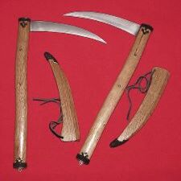
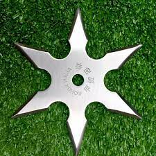
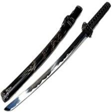

Japonesas

Kama
Kama é um tipo de ferramenta tradicional de agricultura proveniente de Okinawa, no Japão, semelhante a uma foice, usada para ceifar colheitas e também utilizada como arma. Antes de ser usada nas artes marciais, a kama era usada na China, Japão e Filipinas nas colheitas, sobretudo de arroz. Também tem sido utilizada em artes marciais chinesas e coreanas. Uma variação ou evolução da kama é a kusarigama, que consiste na combinação de uma ou até duas kamas a uma corrente.

Shuriken
Shuriken, cujo significado literal é "espada escondida na mão", é imediatamente associada à arma de uso exclusivo dos ninjas. Na realidade, o shuriken também era usado por outros indivíduos, como os samurais que treinavam suas habilidades no uso de armas como arco, lança e espada.. Shuriken (a lâmina que se atira) é uma arma de arremesso de origem japonesa e está entre as 18 disciplinas do Ninjutsu, no Shuriken Jutsu.
